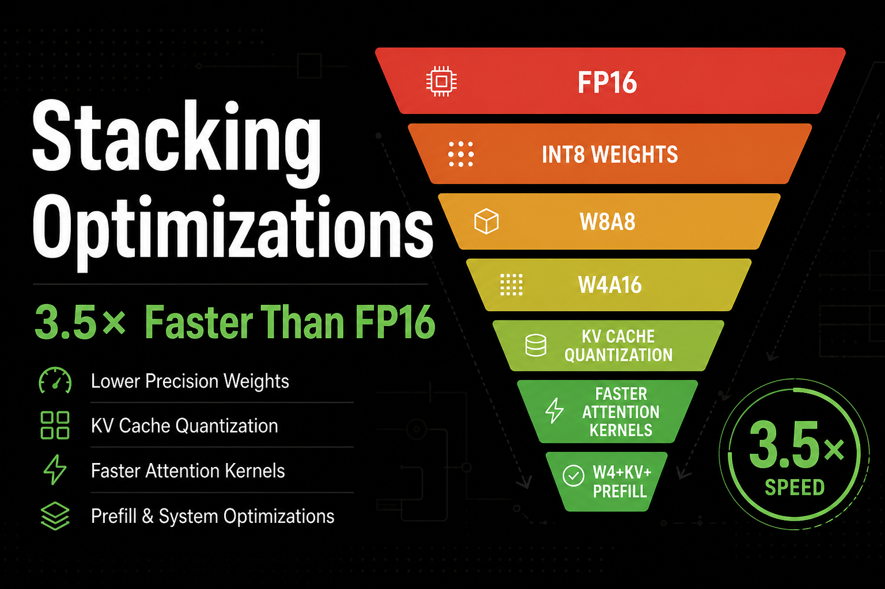
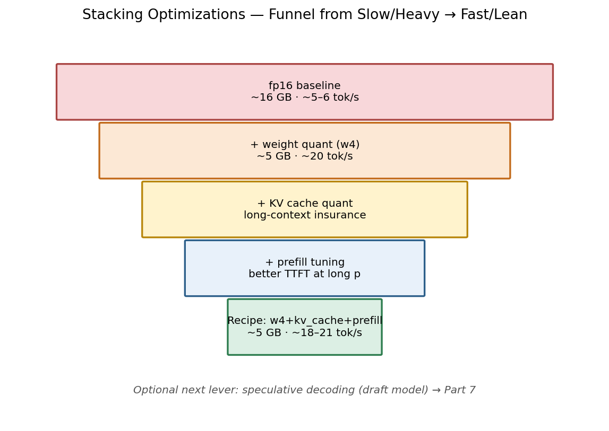
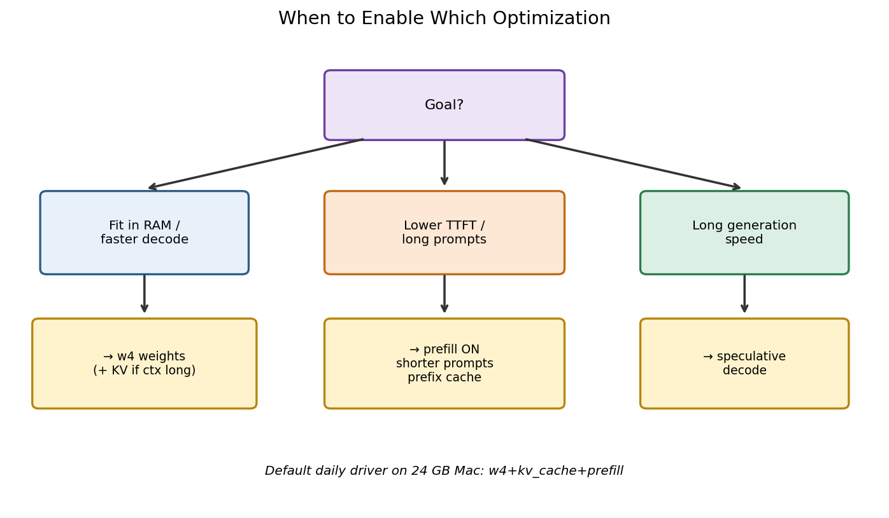
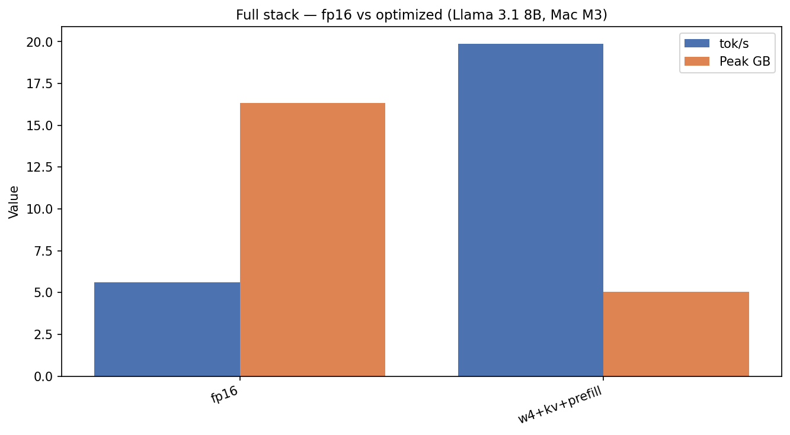
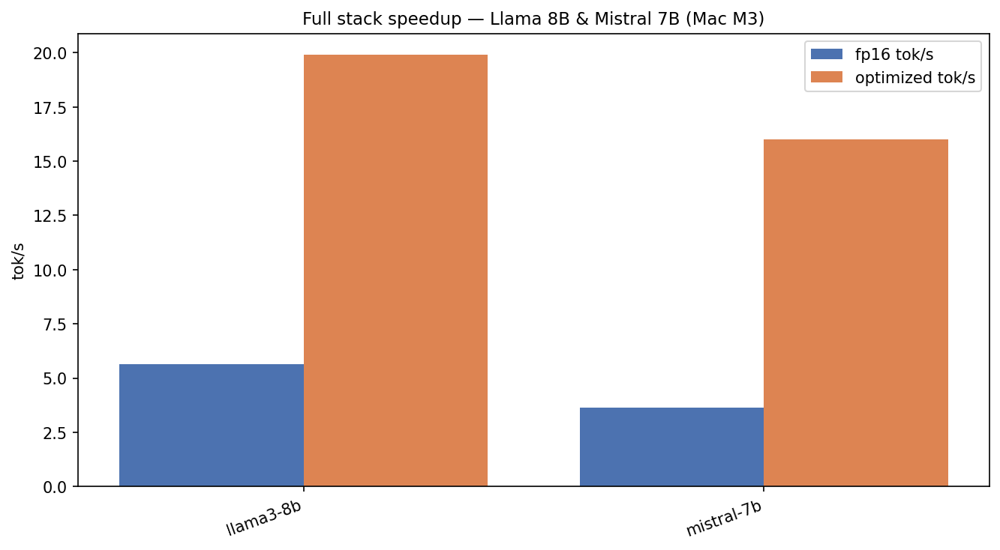
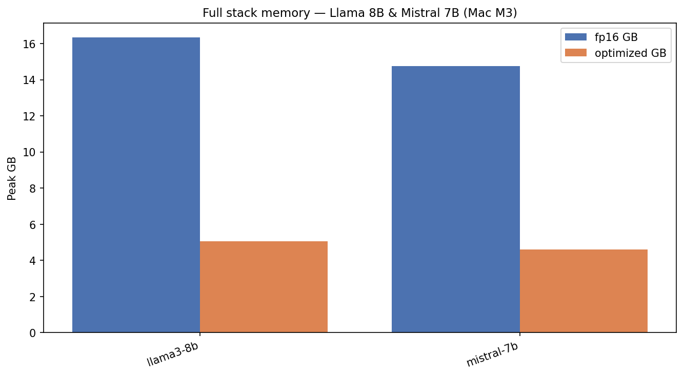
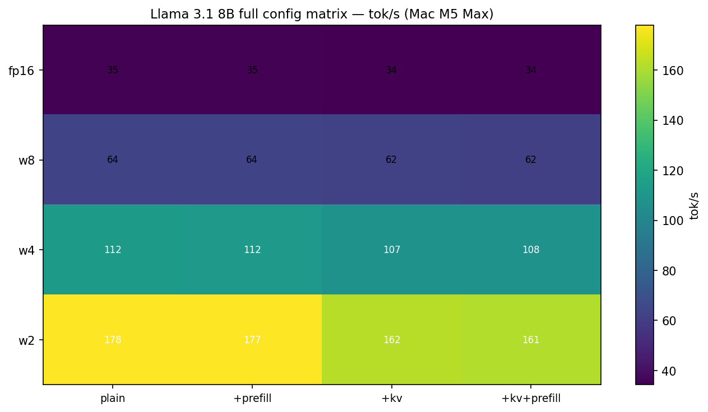
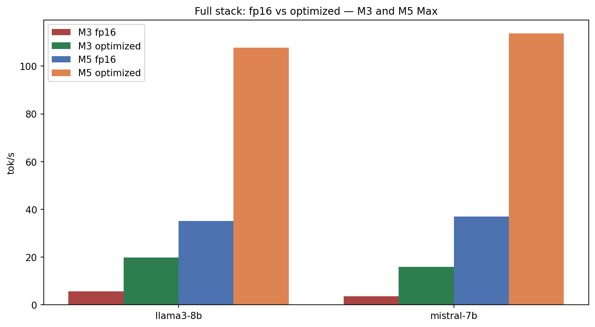

Local LLMs on Apple Silicon — Part 6 of 7
Stacking Optimizations: 3.5× Faster Than FP16
The daily-driver recipe on a 24 GB Mac — and the full M5 Max matrix
UPLOAD THIS IMAGE IN MEDIUM
../images/thumbnails/thumb_05_full_stack.png
Blog posts love clean A/B tests.
Real local inference turns several knobs at once.
UPLOAD THIS IMAGE IN MEDIUM
../images/workflows/05_optimization_funnel.png
UPLOAD THIS IMAGE IN MEDIUM
../images/workflows/05_decision_tree.png
The headline result (Mac M3, Llama 8B)
- fp16 — 16.3 GB · 5.6 tok/s
- w4+kv+prefill — 5.1 GB · 19.9 tok/s (~3.5×)
UPLOAD THIS IMAGE IN MEDIUM
../images/05_full_stack.png
UPLOAD THIS IMAGE IN MEDIUM
../images/05_full_stack_two_models.png
UPLOAD THIS IMAGE IN MEDIUM
../images/05_full_stack_memory.png
M5 Max: the 16-config matrix
UPLOAD THIS IMAGE IN MEDIUM
../images/05_m5_config_matrix.png
UPLOAD THIS IMAGE IN MEDIUM
../images/05_m3_m5_full_stack.png
Fun fact: A full article sweep can take hours. Isolate each config in a subprocess so one Metal OOM doesn’t kill the batch.
Daily driver recipe (24 GB)
w4+kv_cache+prefill on llama3-8b / mistral-7b / qwen-7b.
Expect ~5 GB peak and ~18–21 tok/s on M3.
python scripts/run_benchmark.py --preset llama3-8b --config w4+kv_cache+prefill --hardware "Mac M3"
← Part 5 · Next → Part 7: Speculative Decoding